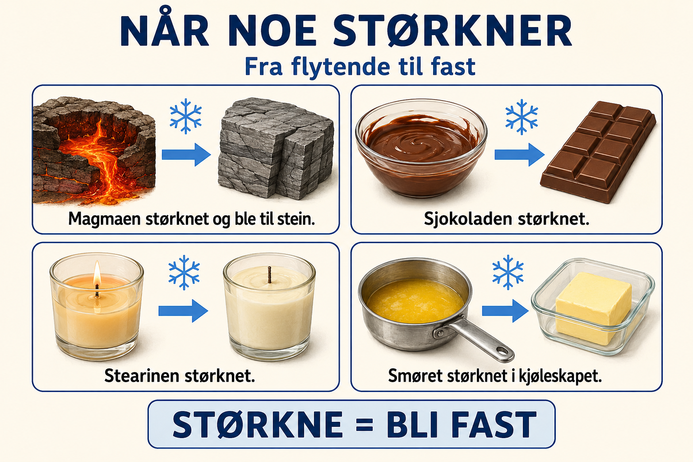
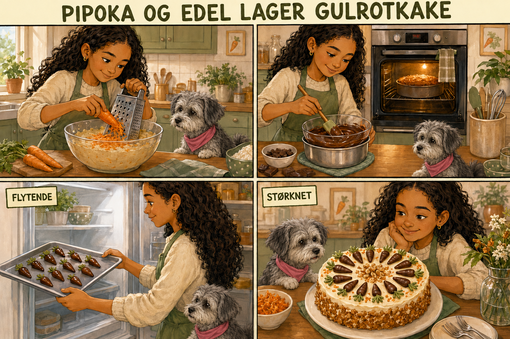

Historie · Naturfag-ord
Størknet
Pipoka og Edel lager gulrotkake – og lærer hva det betyr at noe størkner.
Denne historien øver på
Å størkne = å gå fra flytende til fast. Samme ord, mange eksempler – sjokolade, smør, lys, magma – slik at du kjenner ordet igjen uansett hvor det dukker opp.
Ord
flytende
fast
størkne
smelte = det motsatte

Å størkne betyr å gå fra flytende til fast.
Magma størkner og blir til stein.
Sjokolade størkner og blir hard igjen.
Smør størkner i kjøleskapet.

Edel og Pipoka skal lage en saftig gulrotkake.
Først river Edel gulrøtter og blander dem i kakedeigen.
Mens kaken steker, smelter Edel litt sjokolade.
Den faste sjokoladen blir varm og flytende.
Edel lager små sjokoladegulrøtter som pynt.
Hun setter pynten i kjøleskapet slik at sjokoladen kan størkne.
Etter en stund har den flytende sjokoladen blitt fast igjen.
Til slutt pynter Edel kaken, mens Pipoka håper at noe skal falle på gulvet.
fordi/dermed
hvem/hva
verb
Sjokoladen var flytende. Hva skjedde da den ble kald?
Hva betyr «å størkne»?
Hvorfor ble sjokoladepynten fast igjen?
Hva skjer med smør i kjøleskapet?
Hva skjer med magma når den kjøles ned?
Stearinlys er flytende når det...
1 · Velg ditt eget eksempel
Noe som kan størkne: sjokolade, smør, lys, magma – eller noe du kommer på selv.
2 · Fortell om sjokoladepynten
Hva skjedde med sjokoladepynten i historien? Bruk «fordi» og «dermed».
Sjokoladen ble flytende fordi Edel varmet den.
Dermed kunne hun lage sjokoladegulrøtter.
Pynten sto i kjøleskapet, dermed størknet den igjen.
Dermed kunne hun lage sjokoladegulrøtter.
Pynten sto i kjøleskapet, dermed størknet den igjen.
🎧 Lytt til historien. Ikke se på Les-fanen. Etterpå skal du fortelle med dine egne ord.